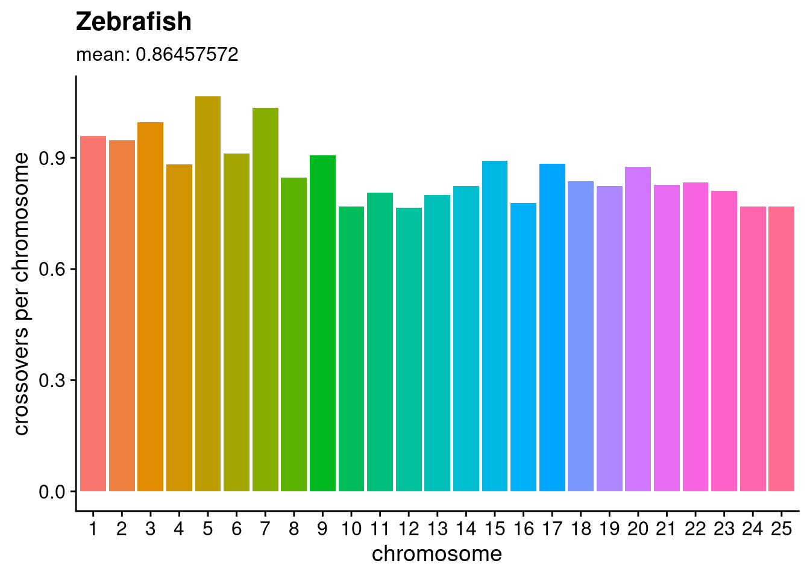
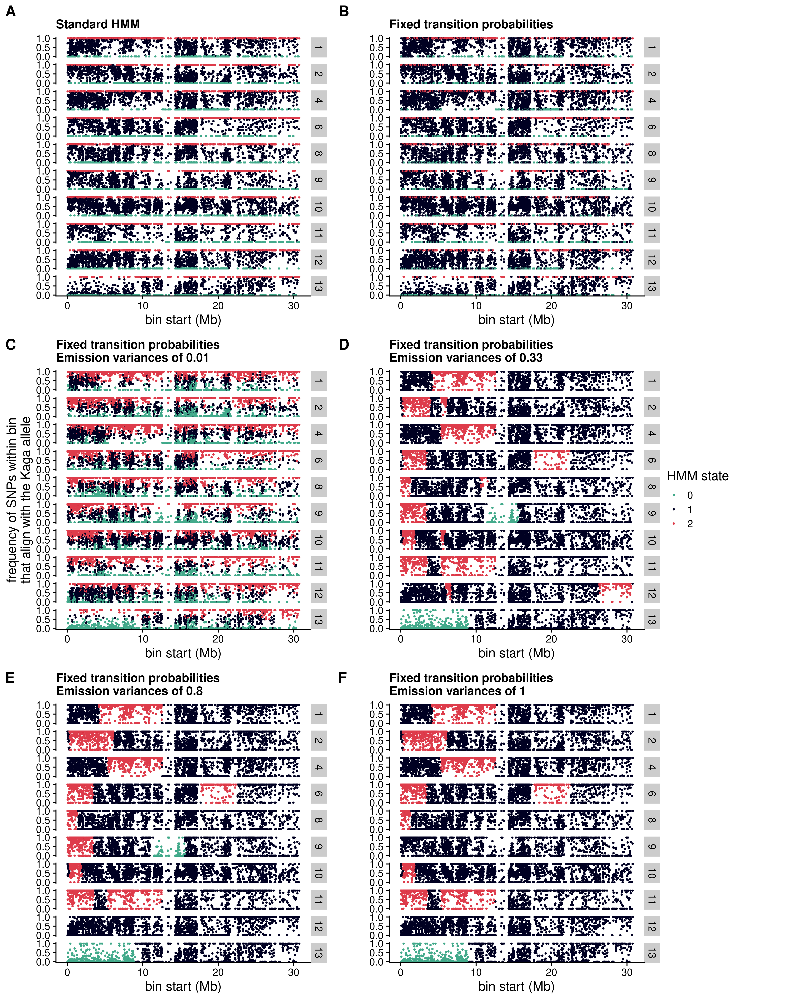

5 F2 genotyping
To maximise the efficiency of our sequencing runs, our collaborators “shallow-sequenced” the F2 generation with the short-read Illumina platform at a depth of ~1x. I then aligned these sequences to the HdrR reference with BWA-MEM2 (Vasimuddin et al. 2019), sorted the reads and marked duplicates with Picard (“Picard Toolkit” 2019), then indexed the resulting BAM files with SAMtools (Danecek et al. 2021). Genotyping these shallow sequences with the same method as used for the high-coverage sequences for the F0 and F1 generation would be inappropriate. We therefore used a different method whereby we used bam-readcount (Khanna et al. 2022) to count the reads that supported either the Cab or the Kaga allele for all SNPs that met the criteria described above in section @f1-heterozygosity above, summed the read counts within 5 kb blocks, and calculated the frequency of reads within each bin that supported the Kaga allele. This generated a value for each bin between 0 and 1, where 0 signified that all reads within that bin supported the Cab allele, and 1 signified that all reads within that bin supported the Kaga allele. Bins containing no reads were imputed with a value of 0.5.
I then used these values for all F2 individuals as the input to a Hidden Markov Model (HMM) with the software package hmmlearn (Hmmlearn/Hmmlearn [2014] 2022), which I applied to classify each bin as one of three states, with state 0 corresponding to homozygous-Cab, 1 corresponding to heterozygous, and 2 corresponding to homozygous-Kaga. Across each chromosome of every sample, the output of the HMM was expected to produce a sequence of states. Based on previous biological knowledge that crossover events occur on average less than once per chromosome (Haenel et al. 2018) (see Figure 5.1 for the average crossover rates per chromosome in zebrafish), I expected to observe the same state persisting for long stretches of the chromosome, only changing to another state between 0 and 3 times, and rarely more. To achieve this, I adjusted the HMM’s transition probabilities to be extremely low, and the Gaussian emission probabilities for each state to have a variance of 0.8, which resulted in long “blocks” of the same genotype call across the chromosome with only a small number of average transitions (i.e. crossover events) per chromosome.
Figure 5.2 shows how adjusting the HMM parameters changed the called genotypes for 10 F2 samples on chromosome 18, by way of an example. Allowing the HMM to train itself for the transition probabilities and emission variances, the HMM produced an apparently noisy output (A). Fixing the transition probabilities to make it very likely for a state to transition back to itself rather than to another state did not appear to change the output (B). However, increasing the Gaussian emission variances created the “blocks” that I expected, and the higher the emission variances, the “tighter” the blocks (C-F).

I used these genotype-block calls to generate the recombination karyoplot shown in Figure 5.3, with homozygous-Cab blocks in green, heterozoygous blocks in navy blue, and homozygous Kaga blocks in red. Missing calls are blank, where the vertical blank lines indicate that the region could not be called for any F2 individuals, likely due to an insufficient number of informative SNPs residing in those 5-kb blocks; and horizontal blank lines indicate that the sample could not be called, likely due to low sequencing coverage for that sample.

In the downstream analysis, I excluded the 22 samples that showed poor coverage across the genome. For the remaining samples, I “filled” the bins with missing genotypes based on the call of the previous called bin, or if unavailable (e.g. the missing bin was at the start of the chromosome), then the next called bin (Figure 5.4); note that this figure retains the low-coverage samples (horizontal blank lines) that were excluded from further analysis to allow for a direct comparison with Figure 5.3. I used these filled genotype calls for the association tests described below in section (somite-assoc-tests?). As a rough way to estimate the accuracy of this genotyping method, we checked the genotypes called by the HMM for the reporter region on chr16 ~28.7Mb against our collaborators’ manual recording of reporter gene counts based on the intensity of the Her7-Venus reporter’s fluorescence. The confusion matrix is set out in Table 5.1, showing that 83% of genotypes called by the HMM were consistent with the reporter genotypes as inferred from fluorescence brightness.
| HMM state | Reporter phenotype | Count |
|---|---|---|
| 0 | 0 | 252 |
| 0 | 1 | 91 |
| 1 | 0 | 9 |
| 1 | 1 | 245 |
| 2 | 1 | 1 |
These karyoplots show interesting recombination patterns for several chromosomes. Given the F2 individuals were selected for the reporter gene on chr16, as expected, there appears to be a strong strong skew towards those genotypes across the whole chromosome. On chr3, most samples are homozygous-Cab for the second half of the chromosome, with a consistent breakpoint around ~22 Mb. However, the final fifth of samples which show a different recombination pattern. The samples are sorted based on the order that they were phenotyped and sequenced, so this difference could have been caused by their being generated from different F1 individuals with distinct haplotypes.

Figure 5.5 shows the proportion of 5-kb bins called as either homozygous-Cab, heterozygous, or homozygous-Kaga within each F2 sample (points). The ordinary expectation for the ratios would be 0.25, 0.5, and 0.25 respectively. However, we observe a skew towards homozygous-Cab and away from homozygous Kaga. This was likely caused by the hybrid incompatibility between Cab and Kaga, given the two strains were derived from populations that are thought to be at the point of speciation.